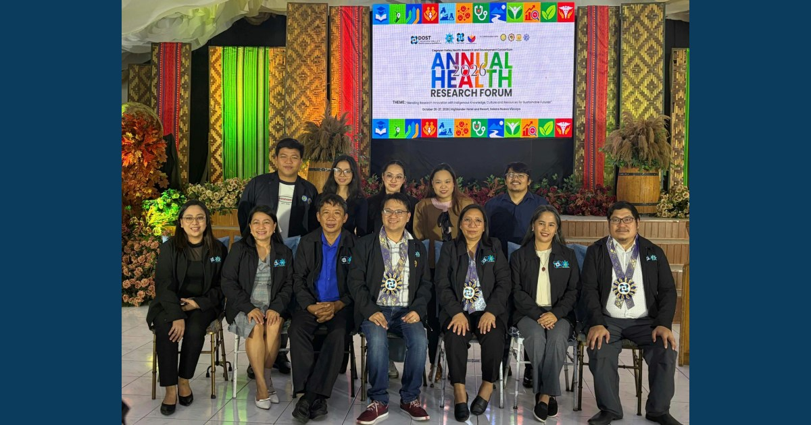

MCNP–ISAP Showcases Health Research at Annual Health Research Forum 2026, Earns Student Recognition

MCNP–ISAP presented one 3-Minute Pitch to Policymakers and three digital poster entries at the Annual Health Research Forum 2026. Irish Ann Almida earned 2nd Best Paper, Student Category recognition.
Read full article